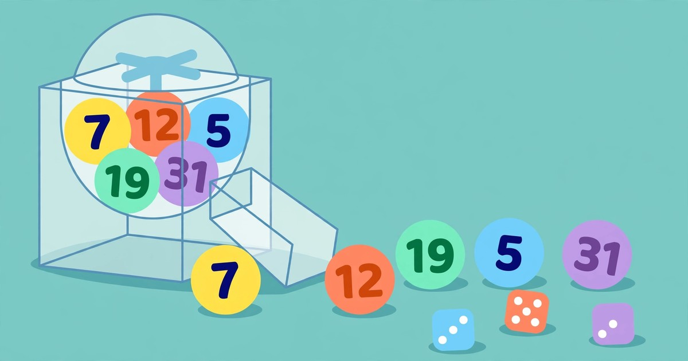

How to Generate a Random Number Online
Pick a fair number in seconds — any range, up to 1,000 numbers at once, unique draws with no repeats, free, no signup, right in your browser.
November 3, 2026 · 6 min read

To generate a random number online, open ToolsHub's Random Number Generator, set a minimum and a maximum, choose how many numbers you want, and click Generate. That is the whole process: no signup, no download, and nothing about your draw leaves your browser.
A fair draw settles arguments that human picking cannot. Ask a person to "pick a number between 1 and 100" and you get habits, birthdays and favourite numbers, not randomness. A generator gives every number in the range the same chance, which is exactly what a raffle, a classroom draw or a game night needs. This guide covers the tool's controls, the maths behind a range and a unique draw, and the mistakes that quietly make a draw unfair.
What the Random Number Generator does
The Random Number Generator picks numbers in any range you choose, for draws, games and decisions. It has four controls: a Minimum field, a Maximum field, a "How many numbers" field that accepts up to 1,000, and a Unique numbers checkbox for draws with no repeats. Click Generate for your list, then Copy to copy it.
Two rules shape everything else. First, the minimum must be below the maximum. Second, a unique draw cannot contain more numbers than the range holds: six unique numbers from 1 to 5 are impossible by arithmetic, not by any fault of the tool. Everything runs in your browser; the numbers are never sent anywhere.
Generate a random number in 5 steps
- Open the Random Number Generator and look at the three fields: Minimum, Maximum, and how many numbers you want.
- Set your range. For a raffle with 100 tickets, set Minimum 1 and Maximum 100. For a die-style roll, set 1 to 6.
- Choose how many numbers you need. One number settles a single winner; six numbers make a lottery-style draw. The field accepts up to 1,000.
- Tick Unique numbers if repeats would ruin the draw. Leave it unticked when repeats are fine — for example, rolling a die again and again, where the same face can legitimately come up twice.
- Click Generate, check the list, then click Copy. Copying beats retyping: a hand-copied list is where a fair draw most often gains a typo.
A worked example: how big is your range, and what are the odds?
The size of a range is one more than most people first guess, because both ends count. A range from 1 to 100 holds 100 − 1 + 1 = 100 numbers, not 99. A range from 5 to 15 holds 15 − 5 + 1 = 11 numbers. Forgetting the "+ 1" is the classic off-by-one error in draws.
That size sets the odds directly. With one draw from 1 to 100, any single number — say 42 — has a 1 in 100 chance, or 1%. With one draw from 1 to 10, any single number has a 1 in 10 chance, or 10%. And every draw starts fresh: if 42 came up last time, its chance next time is still 1 in 100, because the generator has no memory of previous draws.
A worked example: unique draws and why the count explodes
Unique draws are where the maths gets interesting, because each pick removes a number from the pool. Suppose you draw 3 unique numbers from 1 to 10. The first pick has 10 options, the second has 9, and the third has 8, giving 10 × 9 × 8 = 720 possible ordered sequences. Since order does not matter in a draw, divide by the 3 × 2 × 1 = 6 orders of any three numbers: 720 ÷ 6 = 120 possible sets. That is why a small draw already feels unpredictable.
Scale it up and the numbers become enormous. A lottery-style draw of 6 unique numbers from 1 to 49 has 13,983,816 possible sets — nearly 14 million. That figure is worth knowing before anyone claims a "system" for picking them: no pattern of birthdays or hot numbers changes it, because every set of six has exactly the same 1-in-13,983,816 chance.
At the other extreme, asking for 1,000 unique numbers from 1 to 1,000 returns every number exactly once, only shuffled — useful for shuffling a class list.
Random numbers, a coin flip, or dice: which one do you need?
| Tool | What it picks | Use it when |
|---|---|---|
| Random Number Generator (this tool) | Any range, up to 1,000 numbers, unique or with repeats | Raffles, draws, random samples, game numbers |
| Coin Flip & Dice Roller | Heads or tails; 1–6 dice with faces and a total | A two-way decision, or a board-game roll |
| Password Generator | A random password from chosen character sets | Creating a login password — randomness with a security purpose |
Match the tool to the shape of the choice: two outcomes means a coin, a numbered range means the generator, and a password means the password tool.
5 mistakes that make a random draw unfair
- Setting the minimum above the maximum, or equal to it. A range needs a bottom below its top. If the tool will not accept your range, check the two fields before assuming anything is broken.
- Asking for more unique numbers than the range holds. Six unique numbers cannot come from a range of five. Widen the range, ask for fewer numbers, or untick Unique numbers — the maths leaves no fourth option.
- Re-rolling until you like the result. A draw you repeat until it favours someone is not a draw at all. Generate once, in front of everyone if the stakes matter, and accept the result.
- Believing a number is "due". After five draws without a 7, the chance of 7 on the next draw is unchanged. Randomness has no memory, and chasing "due" numbers is how fair draws get second-guessed.
- Using a draw tool for security secrets. A raffle number and an encryption key are not the same kind of random. For passwords, use the Password Generator; for cryptographic secrets, use a dedicated security tool.
Frequently asked questions
Is the Random Number Generator really random?
For draws, games and everyday decisions, yes. The numbers are generated in your browser, and every number in your range has an equal chance on each draw. For security-critical secrets such as encryption keys, use a dedicated security tool instead.
Can I get the same number twice?
Yes, if Unique numbers is unticked — repeats are part of genuine randomness. Tick Unique numbers and every number in one generated list will be different.
How many numbers can I generate at once?
Up to 1,000 numbers in a single list. If you also tick Unique numbers, the range must hold at least that many numbers.
Is anything about my draw sent to a server?
No. The generator runs entirely in your browser, and its page states that the numbers are never sent anywhere.
Related tools: Random Number Generator · Coin Flip & Dice Roller · Password Generator